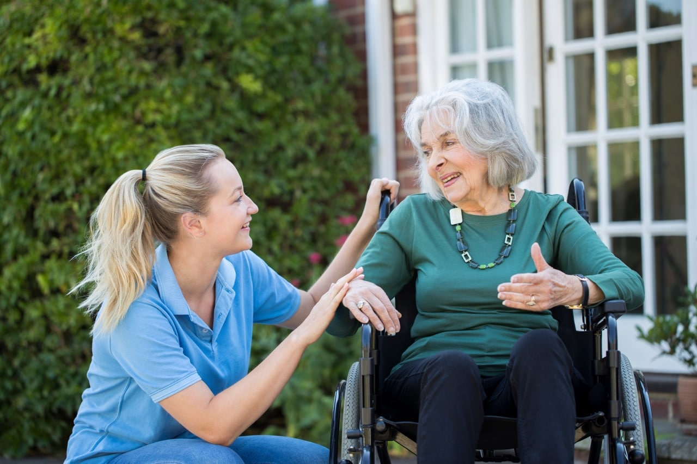

A healthier mind starts with hello.
Connect generations.
Impact lives today.
JoinIn is your personalized bridge to local nursing homes. Whether it’s a simple conversation or a shared skill, every “hello” improves cognitive health and social wellbeing for our elders.
